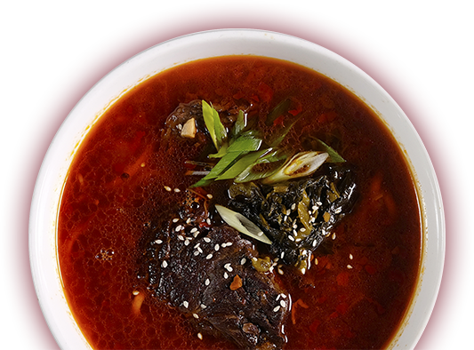
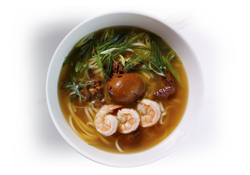
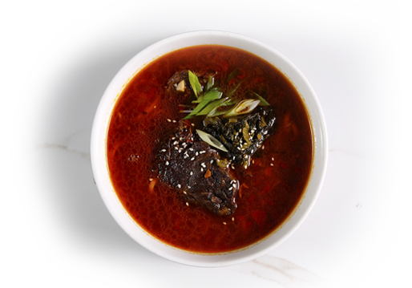

메인 메뉴
chapter 7
Noodles
면 요리
모든 요리에는 후식이 무료로 제공됩니다
(쿠키아이스크림 or 커피,녹차,허브차)

Tinan 360
타이난 누들
Shrimps, Adobo Egg, Sprout, Adobo dressing, Chicken Stock
새우와 조린 달걀, 숙주나물, 아도보양념을
닭육수와 함께 끓인 면요리

Champion Beef 580
챔피온 비프 누들
U.S Chuck, Red Beans Sauce, Chicken & Beef Stock
미국산 소고기 등심부위와 팥소스, 닭육수와
소고기육수를 함께 끓인 면요리
